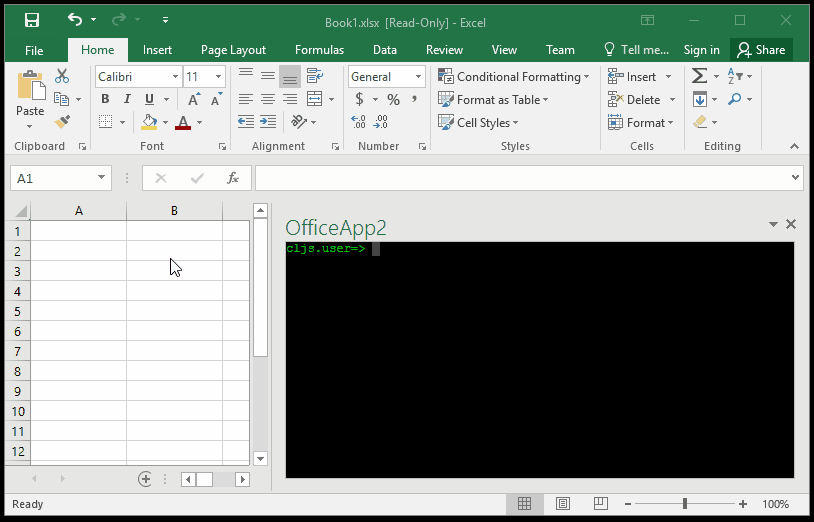
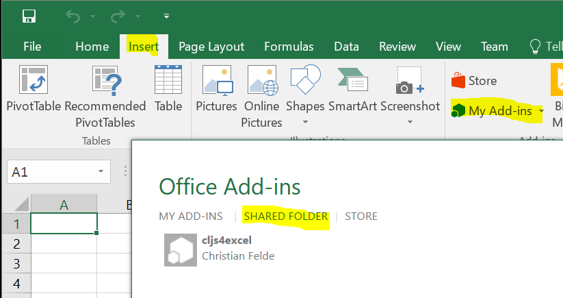

Installation
Download and save the XML manifest file to a network file share. Then follow these instructions for how to add to Excel.
After the mandatory Excel restart, go to Insert -> My Add-ins as shown below. Should work with Microsoft Excel 2013 and newer.

Note that the manifest XML must always be placed on some network share for Excel to accept it. However, this network share can simply be a shared folder locally, as long as you stick to UNC paths (for example: \\WIN-AABBCCDDEE\Share\cljs4excel.xml). No need for any advanced external file server.
Interacting with Excel
cljs4excel comes with a few utility function you can use to interact with Excel data.
As of now, all of these interactions are asynchronous, and will use the provided callback function to pass the result in.
Below is a summary of these functions:
(get-selection fn)
Used to get the current document selection.
(set-selection! matrix)
Replace current document selection with given matrix data.
(add-binding-named-item name id fn)
Add a named binding to a document region. The name can either refer to an existing named item in the document, or a region by using the A1 reference style. Examples of A1 references: A1 (single cell at A1), B1:C2 (2x2 at B1 to C2), Sheet1!$A$1:$B$2 (2x2 within Sheet1 on $A$1 to $B$2), etc..
(add-binding-prompt id fn)
Add a document binding by prompting user to provide a region.
(add-binding-selection id fn)
Add a document binding for the current selection.
(get-all-bindings fn)
Call the given function with a vector of all current binding ids.
(get-binding-details id fn)
Call the given function with the details of given binding id.
Multiple ids can be given as long as the final callback function can
handle as many arguments as ids given. The given ids can either be contained
within a sequence or not. Examples:
(get-binding-details id println)
(get-binding-details id1 id2 println)
(get-binding-details '(id1 id2) println)
(get-binding-details '(id1 id2) '(id3 id4) println)
(get-binding-data id fn)
Pass current binding data to given function.
Multiple ids can be given as long as the final callback function can
handle as many arguments as ids given. The given ids can either be contained
within a sequence or not. Examples:
(get-binding-data id println)
(get-binding-data id1 id2 println)
(get-binding-data '(id1 id2) println)
(get-binding-data '(id1 id2) '(id3 id4) println)
(set-binding-data! id matrix)
Replace binding selection with given matrix data.
Multiple pairs of id and matrix may be given.
(fill-binding-data! id data)
Replace binding selection with given sequence data.
The sequence data is reshaped according to the binding area, and any missing
cells will be replaced with empty content. Multiple pairs of id and
sequence data my be given.
(add-binding-data-event id fn)
Subscribe to data changes on binding id, passing it to given function whenever it is changed.
(remove-binding id)
Remove an existing binding. Any data within the binding remains in sheet.
(remove-binding-data-event id)
Unsubscribe to data changes on binding id.
(show-sp)
Show scratchpad editor.
(hide-sp)
Hide scratchpad editor.
(boot)
(boot named-item)
Eval the content on specified reference. The reference is either a named item or A1 style reference. If no reference is given the current selection is used.
Examples
Example use cases can be found on github.com/cfelde/cljs4excel/blob/master/examples/EXAMPLES.md.
GitHub
All the code can be found on github.com/cfelde/cljs4excel. Feedback, bug fixes, feature requests, and pull requests are all welcome.